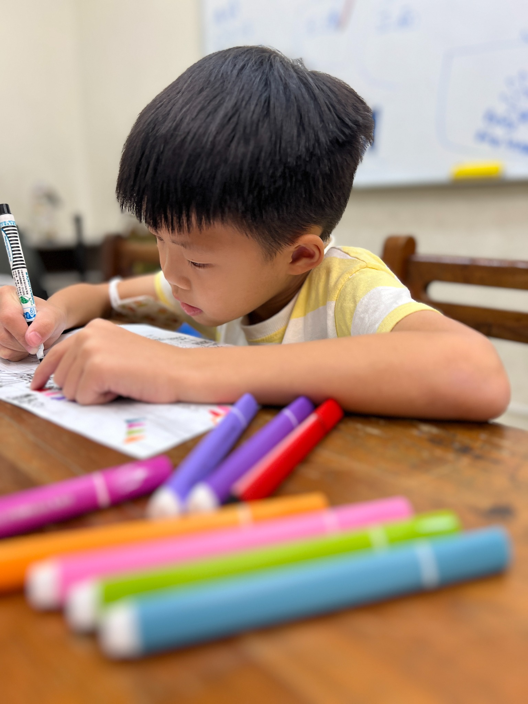
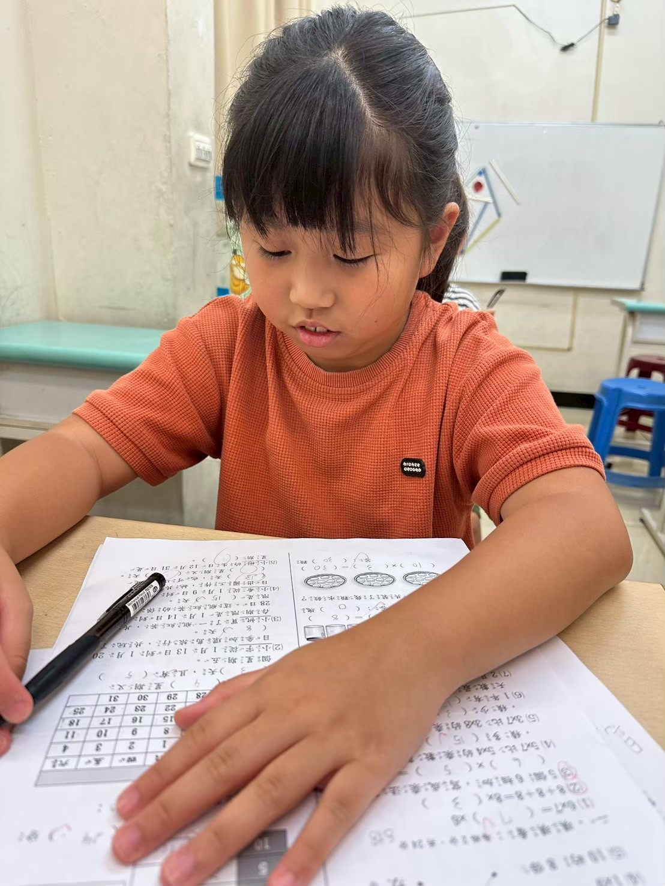
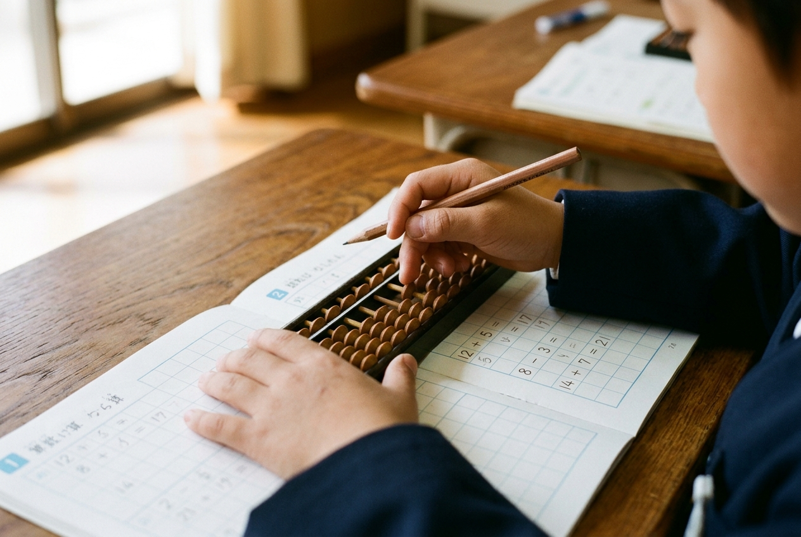

指尖上的空間數感，
鍛造孩子沉浸專注力與腦內投影速算。
「寫作業坐不住、算兩位數還在扳手指、段考粗心進退位寫不完？」尚學珠心算不走死背口訣，而是結合「目標責任制專注課堂」與「算盤空間大腦投影」。專任老師 1 對 1 隨堂解惑，達標即自信下課，讓計算速度提升3倍、考試能秒驗算，為國小數理打下無可撼動的自信基石。

SINCE 1986

孩子不是不聰明，而是「數感沒建立、心定不下來」
在短影音盛行的時代，孩子的注意力容易被切碎。面對數理計算，常出現以下三大卡關現象：
寫功課坐不住，10分鐘就要喝水上廁所？
孩子並非故意調皮，而是大腦抗干擾能力未經鍛鍊，稍微遇到計算題就浮躁分心。
聽算看算毫秒級專注，鍛造定力
珠心算以毫秒級報數節奏要求專注，讓孩子在撥珠過程中學會屏蔽外界雜音，自然養成 40 分鐘坐得住的沉浸定力。
兩位數加減還在扳手指、數格子？
十根手指的物理限制，讓孩子在面對多位數或進退位時心慌意亂、速度緩慢。
大腦算珠虛擬投影，圖像化運算
將實體算盤轉化為大腦右腦的虛擬投影。看見數字瞬間在腦中反射算珠位置，計算速度提升 3~5 倍，跳脫數數的低效循環。
粗心大意！進退位老是算錯、段考寫不完？
學校考試 40 分鐘，大部分時間耗在列直式苦算，往往算錯抄錯卻沒時間檢查。
段考秒速驗算，搶下關鍵分數
運算底子穩固的孩子，能提早 15 分鐘寫完考卷，並用「逆向心算秒速驗算」，徹底杜絕算對寫錯、漏看進位的粗心遺憾！
尚學獨家：腦內投影心算 × 5分鐘收心儀式
珠心算不是死背口訣，而是將「撥珠觸覺」轉化為「空間照相機記憶」的認知神經重構過程。
上珠為五、下珠為一・五進位與十進位的空間幾何
傳統計算孩子要在腦中默念「7 加 8 等於 15，寫 5 進 1...」，大量佔用工作記憶。而在尚學系統中，算珠在右腦如照相機般聚散，完全不耗費語言頻寬，留出 100% 腦力思考應用題！
從端正就位到個別破關：不磨耗耐性的「目標責任制」課堂
端正儀態・握筆清盤
就座後「左手扶盤、右手持筆」，標準手勢沿梁清盤。清脆的算珠歸零聲，是孩子主動切換至專注模式的靜心常規。
自主開卷・沉浸演算
依個人段位進度開卷演算。看算快速落筆、聽算專注投影，手、眼、腦同步聯動，在安靜小班中建立高度抗干擾能力。
隨堂解惑・1 對 1 精確指引
遇到進退位卡關或新題型，專任導師隨堂 1 對 1 指導，當場拆解撥珠盲點並即時導正，絕不讓困惑和挫折帶回家。
目標責任制・達標自信結業
拒絕無效拖時間！每堂課設定清楚目標（如精確寫完指定本數），扎實完成並核驗無誤立刻從容下課，培養時間主導權。
為什麼要在「大班～小二三」黃金期打底？接軌 108 課綱與未來終身受用度
到了小學三四年級，孩子的課表越來越滿，很難再撥時間專門上珠心算。因此尚學的教學目標是：在低年級黃金吸收期，將空間數感徹底內化至大腦！ 即使之後結業不再上課，這套底層能力將在未來的每一次大考與升學中持續發酵：
十進位具象通透・打穩低年級基礎
算盤的上五珠與下四珠，讓 108 課綱抽象的「湊十法、拆十法、進退位」化為指尖直覺反應。徹底擺脫扳手指、數格子、算題慢的拖延習慣，建立孩子對數理的第一個強大自信！
四則運算秒解・釋放大腦攻克素養題
即使此時已結業不再上課，三四年級面臨長篇情境題與多步驟四則運算時，腦內投影讓多位數乘除秒速得出，把 100% 大腦工作記憶留給理解題眼與邏輯推理，同儕苦算時孩子已從容破題！
大考高壓「秒速逆向驗算」搶滿分
面對國小高年級與國中代數方程式的大量運算，曾受過珠心算訓練的孩子擁有極度敏銳的「數感直覺」。鐘響前能提早 15 分鐘完成兩輪逆向秒驗算，徹底消滅「我明明會寫只是粗心算錯」的遺憾！
日常專注風景：在課桌前雕琢沉浸耐力
珠心算不只是追求快速的計算技術，更是一場關於「定心與專注」的刻意練習。在尚學的課堂裡，每一次指尖撥珠與落筆，都是孩子大腦思維的具象化：

預約珠心算學力診斷・免費體驗收心專注力
別讓計算卡關磨滅了孩子對數理的熱情。歡迎預約尚學珠心算學力診斷，由專業老師為孩子評估目前數感與專注狀態，安排最適合的啟蒙起點。
當日到班參觀，免費提供「右腦數感直覺評估」與「握筆坐姿抗壓專注力測試乙次」，名額有限敬請提前預約。
關於珠心算學習的常見問題
Q1. 孩子幾歲開始學珠心算最適合？大班還是國小？
建議在「幼兒大班～國小二年級」是黃金啟蒙期。此時大腦對圖像思維吸收力最強，且手指小肌肉剛好具備撥珠力量。提早建立數感，能無縫銜接小學十進位課堂。
Q2. 珠心算會不會跟國小學校的「建構式數學」算法衝突？
完全不會！建構式數學重在「理解題意邏輯」，而珠心算鍛造的是底層的「強大算力引擎」。算力快、速度穩的孩子，反而能更從容、更深刻地理解學校數學的多步驟推理！
Q3. 學了珠心算，真的能改善寫功課「粗心大意」嗎？
是的！粗心往往源於大腦工作記憶超載。珠心算每週持續「限時聽算看算」，強迫大腦在雜訊中維持抗壓專注，並訓練用逆向心算秒驗算，徹底告別粗心丟分。
Q4. 如果遇到段考週或生病請假，課程該怎麼補？
專項課程請假均落實「補進度非補時數」。老師會詳實記錄進度落點，於返校時進行個別點對點指導與題型檢核，確保每一級位扎實通透，不因請假出現斷層。
Q5. 小學三四年級之後課表排滿沒時間繼續上，前面學的會白費嗎？
完全不會！這正是我們強調「大班～小二三黃金期打底」的原因。珠心算不是要孩子學一輩子，而是把空間數感烙印在大腦中。二三年級完成奠基後，即使結業不再上課，這套「大腦投影速算與秒速驗算」能力將終身攜帶，在中高年級長篇素養題與國中會考持續發揮巨大優勢！